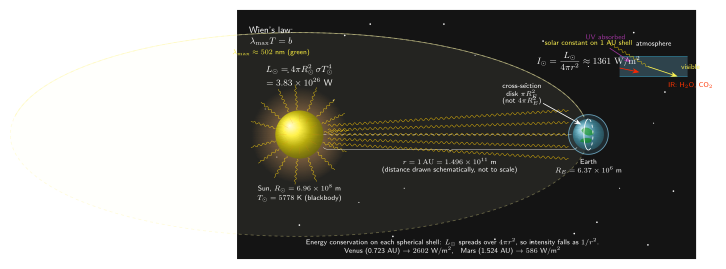

阳光在地面每秒送来多少能量?
上一节我们聊光的辐射压强, 把"光携带动量"的图景推到极致: 一束 $I$ W/m² 的光撞上完美吸收面, 压强就是 $I/c$. 这个 $I$ 从哪里来? 日常里最稳定、最免费的一份光通量, 来自 1.5 亿公里外那颗 G2V 的恒星. 它每秒钟往我们头顶泼下的能量有多少? 你可能听过一个数字: 1361 W/m². 这个数字是哪来的?
我愿意承认, 在做这一节之前, 我脑子里对"阳光的能流密度"只有一个模糊的印象: 夏天中午, 一块一平米的黑板子放在阳光下, 用不了多久就烫得能煎蛋. 这大致在 1000 W 上下吧. 但"大致 1000 W"不是物理, 物理是拿光的诞生地 (一个 5778 K 的火球) 和它到地球的距离 (1.5 亿公里), 用 Stefan-Boltzmann 定律和 $1/r^2$ 几何, 一步一步把数字推出来. 本节就走这条路.
一、把太阳当黑体: Stefan-Boltzmann 给总光度
第一步必须做的简化: 把太阳看成一个半径 $R_\odot = 6.96\times 10^8$ m 的球形黑体, 表面温度 $T_\odot = 5778$ K. 这是近似 —— 太阳大气其实有色球、日冕、光斑、米粒组织, 辐射谱也不是纯普朗克曲线. 但从远处看, 太阳的出射谱和 $T = 5778$ K 的普朗克谱拟合得极好, 黑体近似抓住了 99% 的能量. 我们就用它.
黑体在单位时间里从单位表面积辐射出的总功率, 是 Stefan-Boltzmann 定律:
$$ j^\ast = \sigma T^4, \quad \sigma = 5.670\times 10^{-8}\ \mathrm{W\,m^{-2}\,K^{-4}} \tag{1} $$
这里 $\sigma$ 是 Stefan-Boltzmann 常数, 本身由基本常数 ($h, c, k_B$) 组合得到 —— 这是 Planck 1900 年黑体公式积分的收尾工作, 也是量子革命的入口. 我们本节不推导 $\sigma$, 只借它.
太阳表面积 $A = 4\pi R_\odot^2$, 所以从整颗太阳发出的总功率 (天文学家叫"光度", luminosity) 是
$$ L_\odot = 4\pi R_\odot^2 \sigma T_\odot^4. \tag{2} $$
代入数字:
$$ L_\odot = 4\pi (6.96\times 10^8)^2 \times 5.67\times 10^{-8} \times (5778)^4. $$
一步一步算: 表面积 $4\pi R_\odot^2 = 4\pi \times 4.84\times 10^{17} = 6.09\times 10^{18}\ \mathrm{m^2}$. 再算温度四次方, $T^4 = 5778^4 \approx 1.115\times 10^{15}\ \mathrm{K^4}$. 三者相乘:
$$ L_\odot \approx 6.09\times 10^{18} \times 5.67\times 10^{-8} \times 1.115\times 10^{15} \approx 3.85\times 10^{26}\ \mathrm{W}. $$
官方的精密测量值是 $L_\odot = 3.828\times 10^{26}$ W. 我们的估算和它差不到 1%, 这个 1% 主要来自"太阳不是完美黑体"以及我这里把 $T$ 粗略写成 5778 K (有效温度). 对一个只用了两个数字的估算, 这个精度已经很漂亮了.
$3.828\times 10^{26}$ W 是什么概念? 2023 年全球一次能源消耗总功率约 $2\times 10^{13}$ W. 也就是说, 太阳每秒发出的能量, 相当于全人类能源消耗的 $2\times 10^{13}$ 倍. 它并不是在"耗散"一大份积蓄, 而是以几乎同样的速率发了 46 亿年 —— 这份持续性的来源是核心区 $p$-$p$ 链的核聚变, 以约 $4\times 10^9$ kg/s 的速率把氢变成氦, 每秒亏损 0.7% 的质量作为光.
二、$1/r^2$ 稀释: 从光度到太阳常数
$L_\odot$ 是太阳在四面八方向宇宙泼出的总功率. 这份功率以光速飞出去, 在空间里按球面壳展开. 到距离 $r$ 处, 光子早已跑得不多不少地铺满一个半径为 $r$ 的球壳, 壳的面积是 $4\pi r^2$. 能量守恒 (真空里没有介质吸收) 告诉我们: 单位时间穿过任何一片球壳的总能量, 等于 $L_\odot$. 于是单位面积上的功率 —— 也就是"辐照度" $I(r)$ —— 就是
$$ I(r) = \frac{L_\odot}{4\pi r^2}. $$
这个 $1/r^2$ 稀释是纯几何, 和光的任何内部性质无关, 只要是球对称向外辐射, 且没有吸收, 就必须成立.

对地球: 日地距离 $d = 1\ \mathrm{AU} = 1.496\times 10^{11}$ m. 代入 (2) 式的 $L_\odot$, 得到在 1 AU 处的辐照度, 我们把它叫"太阳常数" $I_\odot$:
$$ I_\odot = \frac{L_\odot}{4\pi d^2} = \frac{3.828\times 10^{26}}{4\pi \times (1.496\times 10^{11})^2}. $$
分母先算: $(1.496\times 10^{11})^2 = 2.238\times 10^{22}$; 再乘 $4\pi$: $4\pi \times 2.238\times 10^{22} = 2.812\times 10^{23}\ \mathrm{m^2}$. 于是
$$ I_\odot \approx \frac{3.828\times 10^{26}}{2.812\times 10^{23}} \approx 1361\ \mathrm{W/m^2}. $$
这就是"太阳常数". 一平米正对阳光的平面, 在大气层外, 每秒钟接收的能量是 1361 焦耳, 也就是 1361 瓦. 这是个让人有点震惊的数字 —— 一块拳头大的黑盘子如果能 100% 吸收并零散热, 七秒钟就把自身温度推到红热.
"常数"这个名字其实有点误导. 太阳常数并非严格常数: 地球公转轨道偏心率约 0.0167, 近日点 (1 月) 和远日点 (7 月) 的距离差 3.3%, 按 $1/r^2$ 算辐照度差 6.7%, 所以 $I_\odot$ 在一年里从约 1321 W/m² 晃到 1412 W/m². 再加上 11 年太阳活动周期, 引起约 0.1% 的振荡, 还有更慢的长期变化. 但在量级上, 1361 W/m² 是讲清楚"阳光给地球送多少能"的那个关键数字.
三、地球的总接收功率, 与大气削掉的一层
太阳常数讲的是轨道上一面垂直光的平板拿到的功率. 地球本身接收多少? 这取决于地球朝向太阳的"截面". 一个半径 $R_E$ 的球面, 从远处看过去就是一个圆盘, 截面面积 $\pi R_E^2$. 要注意的是这里不是 $4\pi R_E^2$ —— 地球的另半边背对太阳, 不接收直射光. 所以地球"接住"的总功率是
$$ P_E = I_\odot \cdot \pi R_E^2. $$
代入 $R_E = 6.37\times 10^6$ m:
$$ P_E = 1361 \times \pi \times (6.37\times 10^6)^2 \approx 1361 \times 1.274\times 10^{14} \approx 1.73\times 10^{17}\ \mathrm{W}. $$
1.73×10¹⁷ W, 也就是 173 千万亿瓦. 这是我说的那个关键数字 —— 它是人类当前总能源消耗 ($\sim 2\times 10^{13}$ W) 的约 8500 倍. 换句话说, 阳光在一个小时里送到地球的能量, 就够全人类挥霍一整年. 这是所有"太阳能足够人类用几万倍"论调的量化根据. 至于实际能不能用上, 这是另一个问题 —— 转化效率、储能、分布、占地, 这里我们不卷入.
1361 W/m² 是大气层外的值. 阳光穿过大气要付两笔学费. 一笔是瑞利散射和臭氧吸收, 吃掉紫外和短波蓝光 —— 这也顺便解释了天为什么是蓝的 (天顶蓝), 落日为什么是红的 (斜穿长程). 一笔是对流层水汽、二氧化碳、氧分子在近红外的吸收带, 吃掉波长 0.9–1.4 μm 附近相当一部分能量. 加上云与气溶胶的吸收/反射, 到达地面的阳光, 在赤道正午晴天、太阳直射 (天顶角 $\theta=0$) 条件下, 辐照度降到约 1000 W/m². 大多数工程场景下的实测值则在 600–800 W/m², 因为通常有斜射 ($\cos\theta$ 减因子) 和部分云.
所以"烫手的黑板子 $\sim$ 1000 W" 这个日常印象不是瞎拍的, 它正是太阳常数 1361 减去大气损耗 (约 25-30%) 后剩下的数字. 物理和生活在此对上了账.
四、Wien 位移、极限检验与一段测量小史
顺带问一句: 太阳这份辐射, 能量最多的波长在哪里? 这由 Wien 位移定律给出:
$$ \lambda_{\max} T = b, \quad b = 2.898\times 10^{-3}\ \mathrm{m\cdot K}. $$
代入 $T_\odot = 5778$ K:
$$ \lambda_{\max} = \frac{2.898\times 10^{-3}}{5778} \approx 5.02\times 10^{-7}\ \mathrm{m} = 502\ \mathrm{nm}. $$
502 nm 正好在绿色附近 (青绿之间). 有趣的一个"巧合"是, 人眼的视见函数 $V(\lambda)$ 的明视觉峰值在 555 nm, 暗视觉峰值在 507 nm, 都在太阳辐射谱密度最强的那个波段. 这不是物理常数决定的巧合, 而是进化选择的结果 —— 我们的眼睛长在一颗 G 星的光下, 用几亿年时间把感光色素调到与可用光子最多的波段最匹配. 换到一颗 M 矮星行星上, 你可能期待一只章鱼式的生物在 1 μm 近红外看得最清.
为了验证我们推出的规律, 做一次极限检验: $1/r^2$ 是否真的立住? 金星距离 $d_V = 0.723$ AU, 火星距离 $d_M = 1.524$ AU. 按几何稀释:
$$ I_V = \frac{I_\odot}{(0.723)^2} = \frac{1361}{0.523} \approx 2602\ \mathrm{W/m^2}, $$
$$ I_M = \frac{I_\odot}{(1.524)^2} = \frac{1361}{2.323} \approx 586\ \mathrm{W/m^2}. $$
金星探测器 (Venera、Pioneer Venus) 和金星轨道飞船测得的轨道太阳常数约 2613 W/m², 火星的值 (Viking 年代到 Mars Reconnaissance Orbiter) 约 589 W/m². 两者都与我们的几何推算在 1% 以内吻合 —— 这就是 $1/r^2$ 的实锤, 跨越整个内太阳系的尺度全都自洽, 从 0.3 AU 的水星到 30 AU 的海王星 (那里阳光稀释到地球的 1/900, 约 1.5 W/m²).
测太阳常数的历史是一条挺有意思的线. 1837-1838 年间, 法国物理学家 Claude Pouillet 用自制的"日光热量计" (pyrheliometer) —— 基本就是一个涂黑的扁圆水桶, 精确称重, 记录水温上升率 —— 在巴黎地面上做了若干次测量, 把大气吸收反演回去, 得到第一个现代意义的太阳常数估计值, 约 1228 W/m². 这个数字已经离真值不远, 错的 10% 大多是大气修正不准. 1881 年, 美国的 Samuel Pierpont Langley 爬上 Mount Whitney (海拔 4400 m, 高处大气薄) 做 bolometer 测量, 把估值推到约 2 cal/(cm²·min) ≈ 1400 W/m², 从此"太阳常数"的量级就定型了.
20 世纪前半叶, Charles Greeley Abbot 在史密森学会系统地观测了三十多年, 每天记录不同波段的太阳光强. 他当时坚持太阳常数随太阳黑子周期变化 ($\sim 0.1\%$), 在那个时代无法证实, 许多同行并不信. 今天看, 他定性上是对的.
真正把精度推到极限的是卫星时代. 从 1978 年 Nimbus-7 的 ERB, 到 1984 年 SMM 上的 ACRIM I, 再到 2003 年 SORCE 卫星的 Total Irradiance Monitor (TIM) 仪器, 人类把太阳常数从地面的"百分之几"精度推进到 0.03% —— TIM 给出的现行最佳值是 1360.8 ± 0.5 W/m². 这个数字并不因为它看起来像 1361 而显得平平无奇: 它把一个 1.5 亿公里外的火球的辐射输出, 钉在了万分之三以内. 这种精度的背后, 是一整套关于热辐射、黑体腔吸收器、电替代校准的工程学. Pouillet 要是能看到, 应该会很高兴.
小结
"光是什么"这个大问题, 在这一节收缩成一个非常具体、非常可数的小问题: 一平米一秒接多少. 答案是 1361 焦耳 —— 从一颗 5778 K 的火球, 经过 1.5 亿公里的几何稀释, 经由 Stefan-Boltzmann 和 $1/r^2$ 两条基本规律, 精确地送到地球轨道. 这一节把光的热力学侧面 (黑体辐射定律) 和几何侧面 ($1/r^2$) 钉在一起, 给出了一个人类文明赖以存在的数字. 下一节, 我们要反过来追问: 太阳内部核聚变产生的光子, 不是一路直奔外面, 它们在密密麻麻的等离子体里被无数次散射, 走了几万年才走到太阳表面 —— 光在随机游走里的平均路径, 又是一个能用 mean free path 来估的数字.
▲